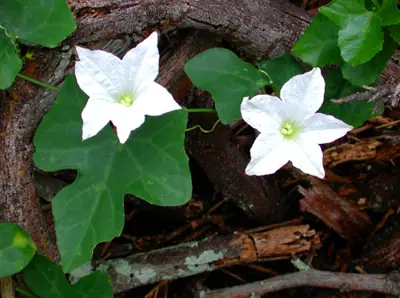

pranet · 出典付きの植物図鑑
ヤサイカラスウリ
Coccinia grandis (L.) Voigt · Cucurbitaceae

Coccinia grandis, the ivy gourd, also known as scarlet gourd, or Tindora, is a tropical vine. It grows primarily in tropical climates and is commonly found in the Indian states where it forms a part of the local cuisine. Coccinia grandis is cooked as a vegetable dish.
出典: Wikipedia 英語版「Coccinia grandis」 · CC BY-SA 4.0
異名: Bryonia acerifolia D.Dietr., Bryonia alceifolia Willd., Bryonia barbata Buch.-Ham. ex Cogn., Bryonia grandis L., Bryonia moimoi Ser., Bryonia sinuosa Wall., Cephalandra grandis Kurz, Cephalandra indica Naudin, Cephalandra moghadd (Asch.) Broun & R.E.Massey, Cephalandra schimperi Naudin, Coccinia helenae Buscal. & Muschl., Coccinia indica Wight & Arn., Coccinia loureiroana M.Roem., Coccinia moghadd (Forssk. ex J.F.Gmel.) Asch., Coccinia moimoi M.Roem., Coccinia palmatisecta Kotschy, Coccinia schimperi Naudin, Coccinia wightiana M.Roem., Cucumis pavel Kostel., Cucurbita dioica Roxb. ex Wight & Arn.
同定や利用は自己責任でお願いします。この図鑑だけを根拠に野生の植物を食べないでください。
出典
- 学名: World Flora Online Plant List 2026-06 · CC0 1.0
- 名前: Wikipedia の記事名と Wikidata · CC0 1.0（Wikidata）。記事名は事実
- 説明: Wikipedia 英語版「Coccinia grandis」 · CC BY-SA 4.0
- 食用・毒性: World Checklist of Useful Plant Species (Diazgranados et al. 2020, RBG Kew) · CC BY 4.0
- 分布: World Checklist of Vascular Plants (WCVP), RBG Kew, version 2026-06-04 · CC BY 3.0
このページは pranet のデータから自動生成しています。コードは MIT、データは項目ごとのライセンス（説明）。